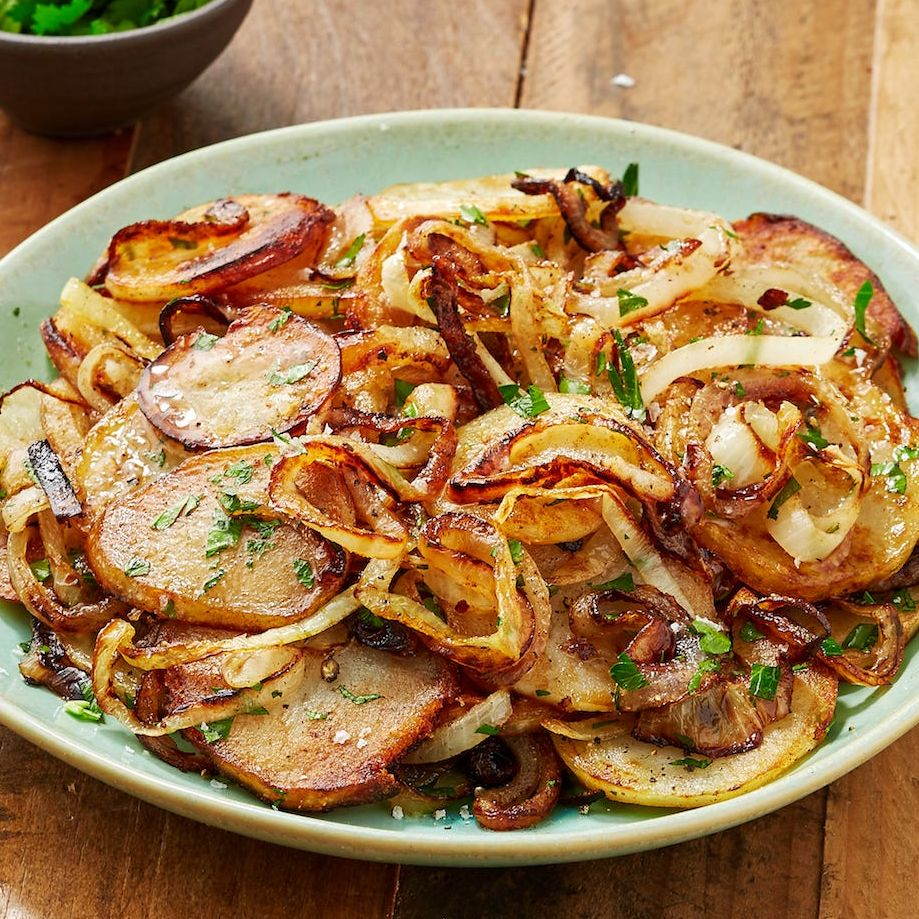

Lyonnaise Potatoes

Description
Pan-fried potatoes are one of life's simplest pleasures. All you need is some
potatoes, some fat, and plenty of salt. This French variety elevates the
pan-fried potato even FURTHER with the addition of caramelized onions and lots
of butter.
Ingredients
-
2 lb. russet potatoes, peeled and sliced into 1/4" thick
rounds
- 3 tbsp. butter
- 3 tbsp. vegetable oil
- 2 small onions, thinly sliced
- 1/4 c. parsley, chopped Kosher salt
Steps
-
Cover potatoes with 2” cold water. Bring to a boil and let simmer until
crisp tender, about 4 minutes. Drain completely.
-
Heat 1 tablespoon butter and 1 tablespoon oil in a large nonstick skillet
until shimmering.
- Add 1/2 potatoes and 1/2 of the onions.
-
Let cook until potatoes are starting to crisp and the onions are golden,
about 5 minutes.
-
Add the rest of the butter, oil, potatoes, and onions and continue to cook.
- Mix until all onions are softened and browned, about 15 minutes.
-
Remove from heat and stir in parsley. Season with salt and pepper before
serving.
return to recipes page